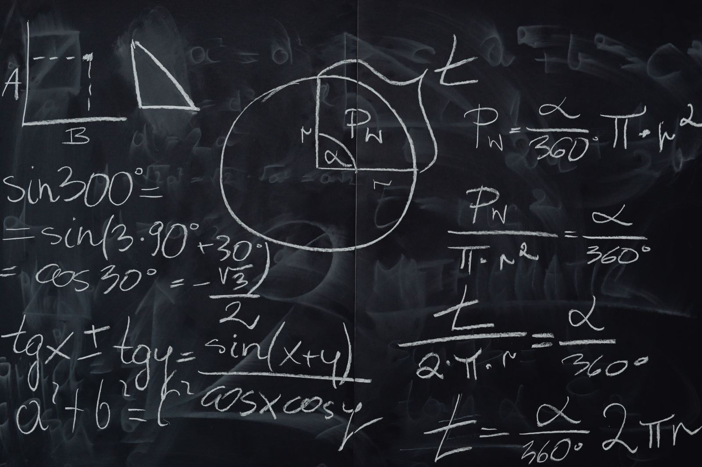

Research notebook · §1 — the practice · Vienna
The mathematics is exact. The timelines are not.
I am Dr Vera Kaminski, a quantum information theorist. Labs, funders and deep-tech teams hire me to find out what their quantum claims actually assume: algorithm advantage assessments, error-model reviews, and audits that list every number a roadmap is standing on. The conclusions are stated with their assumptions attached — error rates, qubit quality, overheads — because a claim without them is not a claim, it is a mood.
I do not sell dates. If a roadmap needs a breakthrough to be true, my report names the breakthrough and what it would have to deliver. A study that concludes not yet, and here is the missing factor is a billed, publishable outcome of this practice, not a failure of it.
- № 44
- Resource estimate for a chemistry claimHardware team · stage: question framing
- № 43
- Error-model review of a consortium roadmapStage: analysis — the assumptions list is at nine entries
- № 42
- Briefing pack for a funder's panelStage: drafting · the panel reads conclusions first

studies, reviews and collaborations closed since the practice opened in 2018
conclusions of "not yet" — billed, delivered, and six of them published
roadmaps and pitch decks restated with their assumptions printed
timelines sold, dates promised, or revolutions forecast
§1.1 · The instrument · one qubit, honestly
The Bloch tool. It computes the state it draws.
Every quantum portfolio has a spinning sphere. Most are decoration, and some are wrong — a state vector does not orbit in a plane. This one is a calculator wearing a sphere: set θ and φ, and the amplitudes, the probabilities and the vector are worked line by line from the printed relation, the way they would appear in a notebook. The sphere is drawn from the same numbers, so the picture cannot drift away from the arithmetic.
The printed relation — the only source the tool reads
|ψ⟩ = cos(θ/2)|0⟩ + eiφ · sin(θ/2)|1⟩
α = cos(θ/2) is real. β = sin(θ/2)·(cos φ + i·sin φ) carries the phase. The probabilities are |α|² and |β|², and they must sum to 1 — the tool prints the check. The Bloch vector is r = (sinθ·cosφ, sinθ·sinφ, cosθ): a pure state lives on the sphere, never inside it.
Fig. 1 — orthographic projection, azimuth 0.6 rad, elevation 0.42 rad. The vector is the computed r, drawn to scale.
|+⟩ — equal superposition, phase zero.
α = cos(θ/2) = cos 45° = 0.7071
sin(θ/2) = 0.7071 · cos φ = 1.0000 · sin φ = 0.0000
β = sin(θ/2)·(cos φ + i·sin φ) = 0.7071 + 0.0000i
P(0) = |α|² = 0.5000 → 50.0%
P(1) = |β|² = 0.5000 → 50.0%
r = (sinθ·cosφ, sinθ·sinφ, cosθ) = (1.000, 0.000, 0.000)
check: |α|² + |β|² = 1.0000 ✓ — a state, not a suggestion
Try |+⟩ and then |−⟩: the probabilities do not move, the state does. That difference — invisible to a single measurement, decisive in an algorithm — is most of what this practice is paid to keep track of.
§1.2 · The register · what can be commissioned
Five lines of work. Each ends in a written conclusion.
Every engagement closes with a report whose first page is the conclusion and whose second is the list of assumptions it stands on. If the honest conclusion is not yet, that is the report.
| № | Service | Who it is for | Basis | Status |
|---|---|---|---|---|
| Q.01 | Algorithm advantage assessment A claimed quantum advantage, estimated honestly: resource counts at stated error rates, against the best classical method, at the client's actual problem sizes. | Deep-tech teams, labs | Study days | Open |
| Q.02 | Error-model & overhead review A hardware or fault-tolerance roadmap read the way a referee reads it: every error rate traced to a measurement or marked as a hope. | Hardware teams, consortia | Review days | Open |
| Q.03 | Assumptions audit One document — a deck, a roadmap, a funding case — taken apart into the list of things that must be true for it to hold. Fixed fee, fixed scope. | Funders, boards | Fixed fee | Open |
| Q.04 | Foundations collaboration A theorist on the team for a defined question — contextuality, verification, resource theories — with pre-registered analysis where the question allows it. | University groups | Study days | One place |
| Q.05 | Funder due-diligence briefing A panel or investment committee briefed on a claim set: what is measured, what is modelled, what is marketing. Questions taken live. | Funders, panels | Per session | Open |
"Vera found the assumption our roadmap was standing on. It was load-bearing, and it was not written anywhere in the document. The restated roadmap is shorter, duller, and the first version our board has actually believed."
§1.3 · The fee shape · printed, like everything else
What a study costs, before you write.
The estimator reads the printed rate table — the same table that appears in every engagement letter. Build the shape of your study and the arithmetic is shown line by line.
What moves the price: the size of the claim set, the depth of review (documents only, or documents plus code and data), and a deadline that falls inside a funding round.
What does not move the price: the conclusion. A study that ends in not yet costs exactly what the same study ending in yes would have cost. This is stated in the engagement letter, because it has to be.
An estimator is a pricing signal, not a quote: the engagement letter fixes the fee once the claim set is enumerated. The assumptions audit is fixed-fee precisely so that its conclusion cannot be negotiated by scope.
Have a claim that needs its assumptions listed?
Send the document the claim lives in — deck, roadmap, funding case — and the decision it feeds. That is a complete first message.